Bären – Hörverstehen mit Lückentext (interaktiv)

Butterfahrt – Hörverstehen mit Lückentext (interaktiv)

Burgund – Hörverstehen mit Lückentext (interaktiv)

Burgenland – Hörverstehen mit Lückentext (interaktiv)

Bunker – Hörverstehen mit Lückentext (interaktiv)
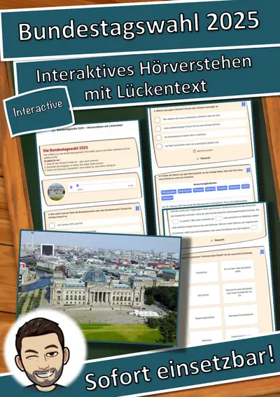
Bundestagswahl 2025 – Hörverstehen mit Lückentext (interaktiv)

Bumerang – Hörverstehen mit Lückentext (interaktiv)

Buddha – Hörverstehen mit Lückentext (interaktiv)
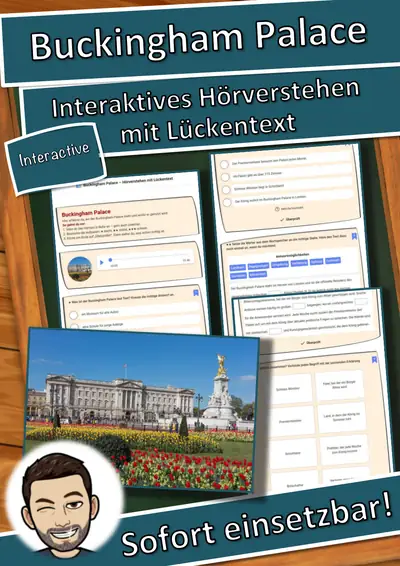
Buckingham Palace – Hörverstehen mit Lückentext (interaktiv)

Bewerbungsanschreiben Lückentext mit Wortspeicher Hörverstehen und Suchsel
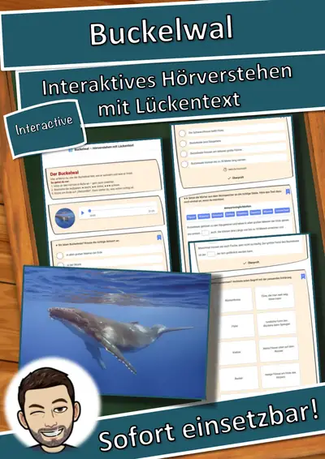
Buckelwal – Hörverstehen mit Lückentext (interaktiv)

Buchen – Hörverstehen mit Lückentext (interaktiv)

Bewegungskoordination Lückentext mit Wortspeicher Hörverstehen und Suchsel

Brüssel – Hörverstehen mit Lückentext (interaktiv)

Zypern – Hörverstehen mit Lückentext (interaktiv)
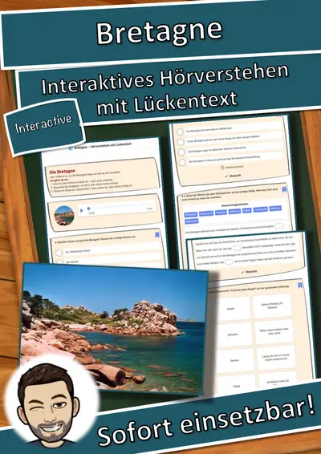
Bretagne – Hörverstehen mit Lückentext (interaktiv)

Brügge – Hörverstehen mit Lückentext (interaktiv)

Bronzezeit – Hörverstehen mit Lückentext (interaktiv)

Bregenz – Hörverstehen mit Lückentext (interaktiv)

Braunbär – Hörverstehen mit Lückentext (interaktiv)

Bratwurst – Hörverstehen mit Lückentext (interaktiv)

Brombeere – Hörverstehen mit Lückentext (interaktiv)

Brezel – Hörverstehen mit Lückentext (interaktiv)
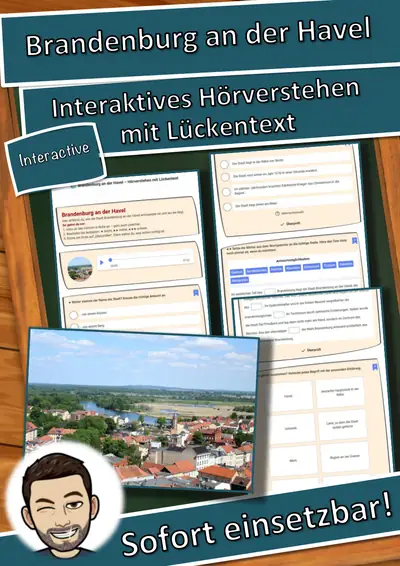
Brandenburg an der Havel – Hörverstehen mit Lückentext (interaktiv)

Bozen – Hörverstehen mit Lückentext (interaktiv)

Boxer (Hund) – Hörverstehen mit Lückentext (interaktiv)

Boston – Hörverstehen mit Lückentext (interaktiv)

Brennnessel – Hörverstehen mit Lückentext (interaktiv)

Bremsen (Insekten) – Hörverstehen mit Lückentext (interaktiv)

Bosnien und Herzegowina – Hörverstehen mit Lückentext (interaktiv)

Borkum – Hörverstehen mit Lückentext (interaktiv)

Borkenkäfer – Hörverstehen mit Lückentext (interaktiv)

Braunschweig – Hörverstehen mit Lückentext (interaktiv)

Bolivien – Hörverstehen mit Lückentext (interaktiv)

Bochum – Hörverstehen mit Lückentext (interaktiv)

Blut – Hörverstehen mit Lückentext (interaktiv)
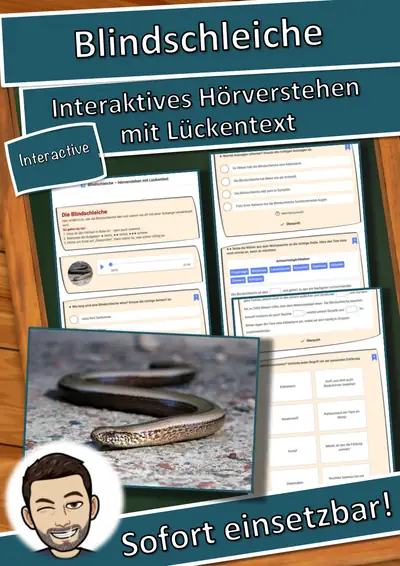
Blindschleiche – Hörverstehen mit Lückentext (interaktiv)
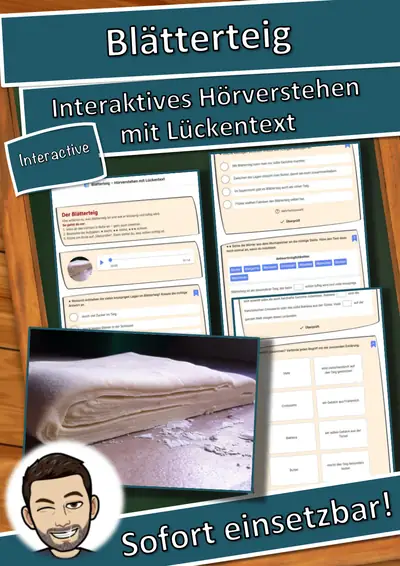
Blätterteig – Hörverstehen mit Lückentext (interaktiv)

Bisamratte – Hörverstehen mit Lückentext (interaktiv)

Birmingham – Hörverstehen mit Lückentext (interaktiv)

Beherrschung des Feuers Lückentext mit Wortspeicher Hörverstehen und Suchsel

Berufsschule – Hörverstehen mit Lückentext (interaktiv)

Bernstein – Hörverstehen mit Lückentext (interaktiv)

Bern (Stadt) – Hörverstehen mit Lückentext (interaktiv)

Bern (Kanton) – Hörverstehen mit Lückentext (interaktiv)

Bergisch Gladbach – Hörverstehen mit Lückentext (interaktiv)

Berliner Mauer – Hörverstehen mit Lückentext (interaktiv)
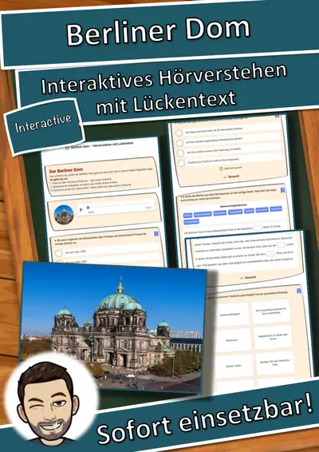
Berliner Dom – Hörverstehen mit Lückentext (interaktiv)

Belarus – Hörverstehen mit Lückentext (interaktiv)

Beirut – Hörverstehen mit Lückentext (interaktiv)

Bayreuth – Hörverstehen mit Lückentext (interaktiv)

Bayern – Hörverstehen mit Lückentext (interaktiv)

Basilikum – Hörverstehen mit Lückentext (interaktiv)

Basel – Hörverstehen mit Lückentext (interaktiv)
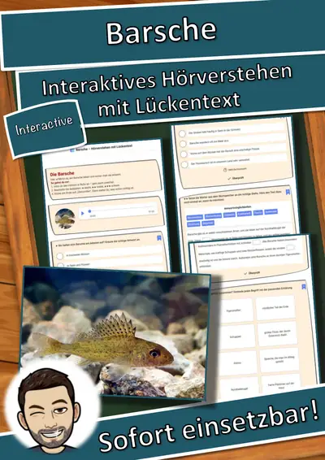
Barsche – Hörverstehen mit Lückentext (interaktiv)
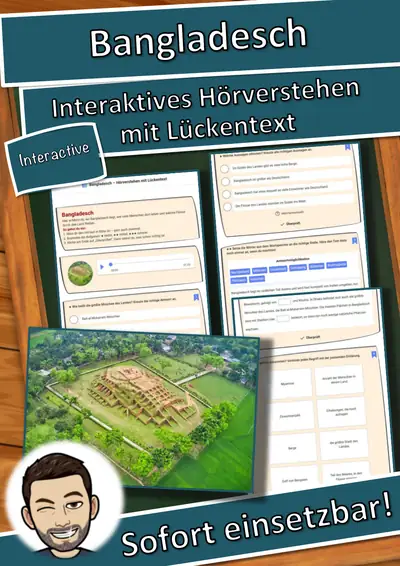
Bangladesch – Hörverstehen mit Lückentext (interaktiv)

Bamberg – Hörverstehen mit Lückentext (interaktiv)
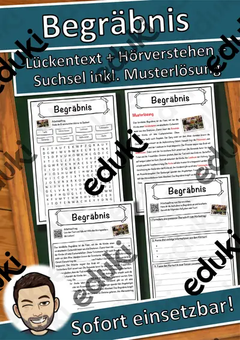
Begräbnis Lückentext mit Wortspeicher Hörverstehen und Suchsel

Ballaststoffe – Hörverstehen mit Lückentext (interaktiv)

Baku – Hörverstehen mit Lückentext (interaktiv)

Baby-Talk Lückentext mit Wortspeicher Hörverstehen und Suchsel
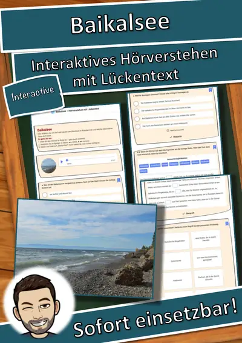
Baikalsee – Hörverstehen mit Lückentext (interaktiv)

Bahrain – Hörverstehen mit Lückentext (interaktiv)

Bahnhof – Hörverstehen mit Lückentext (interaktiv)

Bahamas – Hörverstehen mit Lückentext (interaktiv)

Bagdad – Hörverstehen mit Lückentext (interaktiv)

Azoren – Hörverstehen mit Lückentext (interaktiv)

Augsburger Puppenkiste – Hörverstehen mit Lückentext (interaktiv)

Atomenergie – Hörverstehen mit Lückentext (interaktiv)
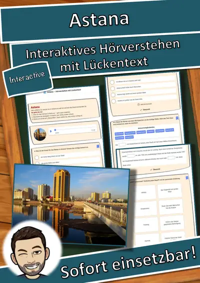
Astana – Hörverstehen mit Lückentext (interaktiv)

Aserbaidschan – Hörverstehen mit Lückentext (interaktiv)

Aschenputtel – Hörverstehen mit Lückentext (interaktiv)

Auge-Hand-Koordination Lückentext mit Wortspeicher Hörverstehen und Suchsel
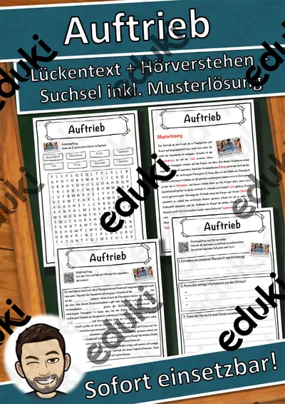
Auftrieb Lückentext mit Wortspeicher Hörverstehen und Suchsel

Asche – Hörverstehen mit Lückentext (interaktiv)
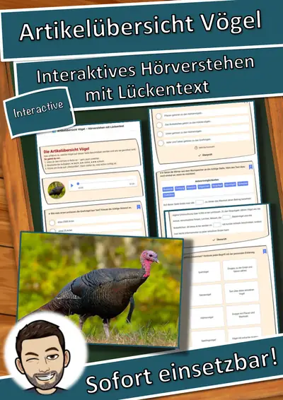
Artikelübersicht Vögel – Hörverstehen mit Lückentext (interaktiv)
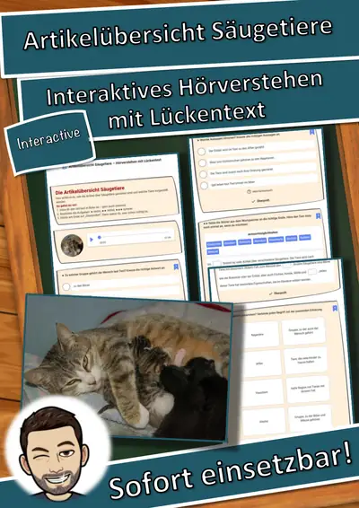
Artikelübersicht Säugetiere – Hörverstehen mit Lückentext (interaktiv)

Artikelübersicht Politik – Hörverstehen mit Lückentext (interaktiv)

Armenien – Hörverstehen mit Lückentext (interaktiv)
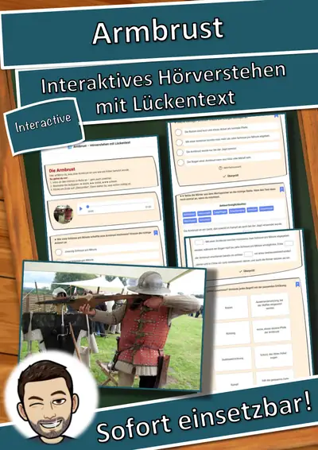
Armbrust – Hörverstehen mit Lückentext (interaktiv)

Aprikose – Hörverstehen mit Lückentext (interaktiv)

Aphrodite – Hörverstehen mit Lückentext (interaktiv)

Antwerpen – Hörverstehen mit Lückentext (interaktiv)

Antilope – Hörverstehen mit Lückentext (interaktiv)
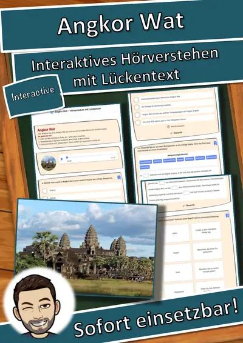
Angkor Wat – Hörverstehen mit Lückentext (interaktiv)

Andorra la Vella – Hörverstehen mit Lückentext (interaktiv)

Andorra – Hörverstehen mit Lückentext (interaktiv)

Anatomie – Hörverstehen mit Lückentext (interaktiv)

Anakondas – Hörverstehen mit Lückentext (interaktiv)

Amsterdam – Hörverstehen mit Lückentext (interaktiv)
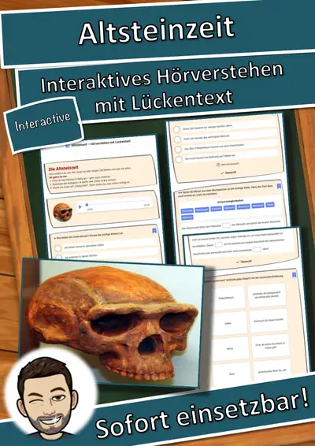
Altsteinzeit – Hörverstehen mit Lückentext (interaktiv)
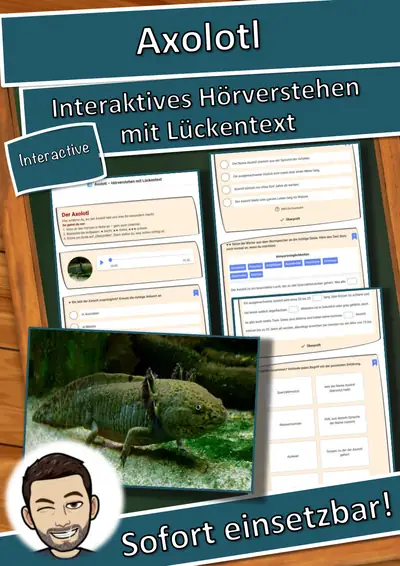
Axolotl – Hörverstehen mit Lückentext (interaktiv)

Altes Ägypten – Hörverstehen mit Lückentext (interaktiv)
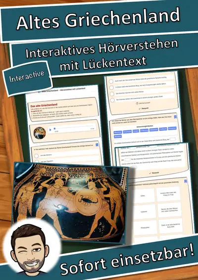
Altes Griechenland – Hörverstehen mit Lückentext (interaktiv)

Altertum – Hörverstehen mit Lückentext (interaktiv)
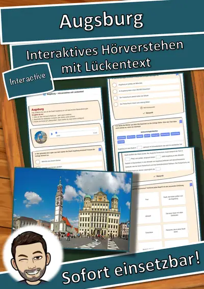
Augsburg – Hörverstehen mit Lückentext (interaktiv)
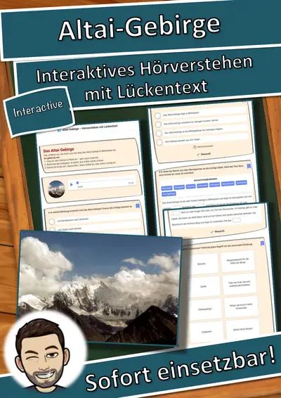
Altai-Gebirge – Hörverstehen mit Lückentext (interaktiv)

Allerheiligen – Hörverstehen mit Lückentext (interaktiv)

Alhambra – Hörverstehen mit Lückentext (interaktiv)
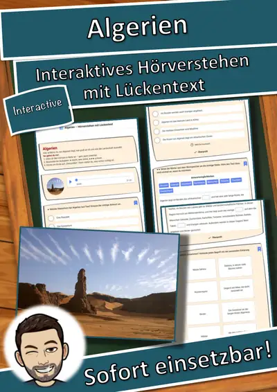
Algerien – Hörverstehen mit Lückentext (interaktiv)
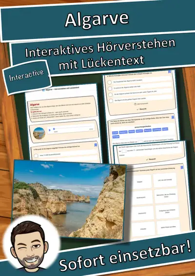
Algarve – Hörverstehen mit Lückentext (interaktiv)

Alcatraz – Hörverstehen mit Lückentext (interaktiv)

Auferweckung Jesu Lückentext mit Wortspeicher Hörverstehen und Suchsel

Albanien – Hörverstehen mit Lückentext (interaktiv)

Apotheke – Hörverstehen mit Lückentext (interaktiv)

Atmung beim Sprechen Lückentext mit Wortspeicher Hörverstehen und Suchsel

Afghanistan – Hörverstehen mit Lückentext (interaktiv)

Affenbrotbäume – Hörverstehen mit Lückentext (interaktiv)

Absolutismus – Hörverstehen mit Lückentext (interaktiv)
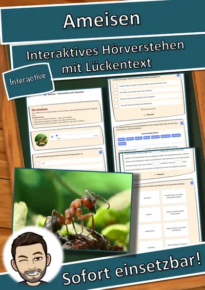
Ameisen – Hörverstehen mit Lückentext (interaktiv)

Acker – Hörverstehen mit Lückentext (interaktiv)

Abendmahl – Hörverstehen mit Lückentext (interaktiv)

Aas – Hörverstehen mit Lückentext (interaktiv)
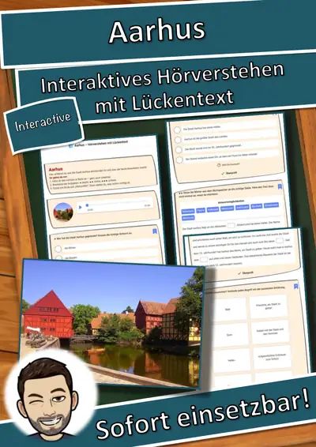
Aarhus – Hörverstehen mit Lückentext (interaktiv)

Aachener Dom – Hörverstehen mit Lückentext (interaktiv)

Algen – Hörverstehen mit Lückentext (interaktiv)

Alaska – Hörverstehen mit Lückentext (interaktiv)
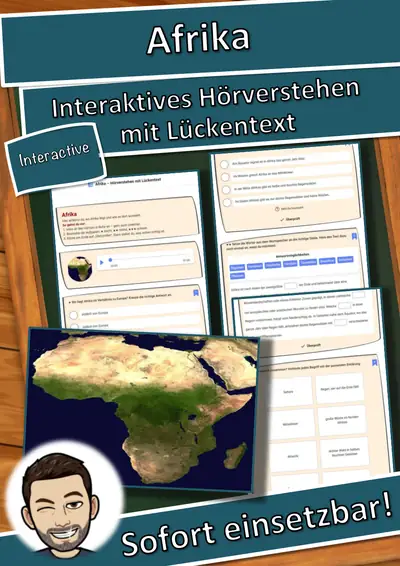
Afrika – Hörverstehen mit Lückentext (interaktiv)

Asteroiden Lückentext mit Wortspeicher Hörverstehen und Suchsel

Aquarellmalerei Lückentext mit Wortspeicher Hörverstehen und Suchsel
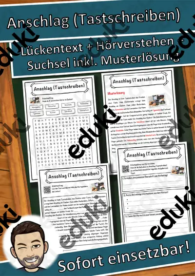
Anschlag (Tastschreiben) Lückentext mit Wortspeicher Hörverstehen und Suchsel

Anreizsysteme Lückentext mit Wortspeicher Hörverstehen und Suchsel
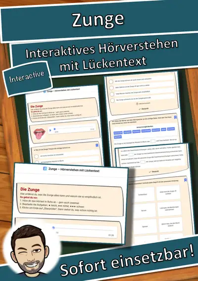
Zunge – Hörverstehen mit Lückentext (interaktiv)
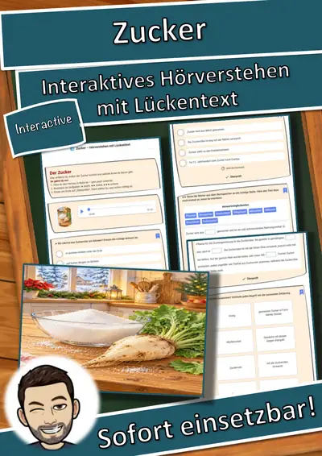
Zucker – Hörverstehen mit Lückentext (interaktiv)

Zitrone – Hörverstehen mit Lückentext (interaktiv)

Zither – Hörverstehen mit Lückentext (interaktiv)

San Marino – Hörverstehen mit Lückentext (interaktiv)
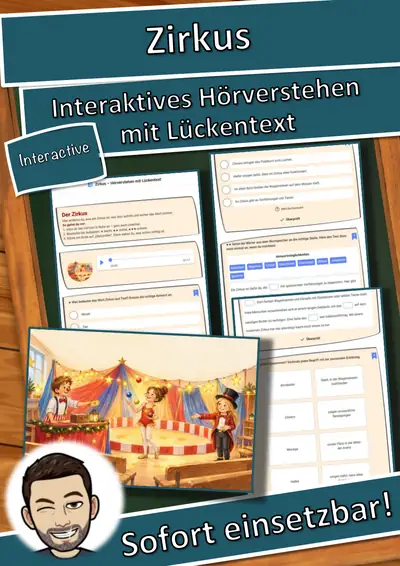
Zirkus – Hörverstehen mit Lückentext (interaktiv)
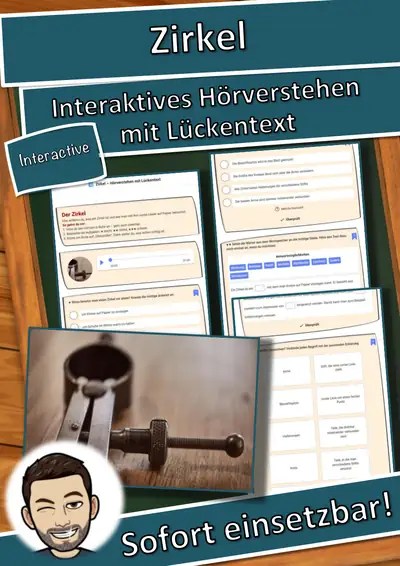
Zirkel – Hörverstehen mit Lückentext (interaktiv)

Zelt – Hörverstehen mit Lückentext (interaktiv)
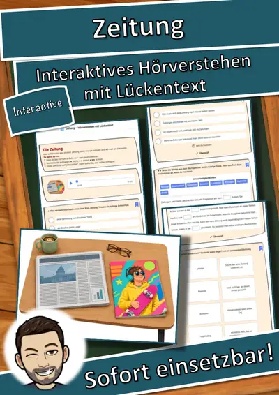
Zeitung – Hörverstehen mit Lückentext (interaktiv)

Zeichnung – Hörverstehen mit Lückentext (interaktiv)
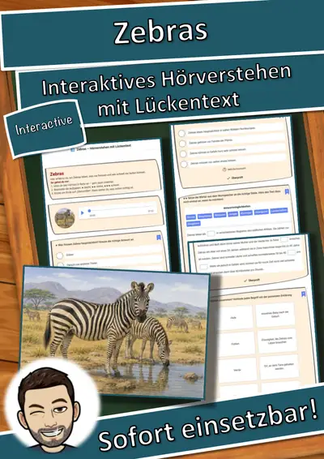
Zebras – Hörverstehen mit Lückentext (interaktiv)
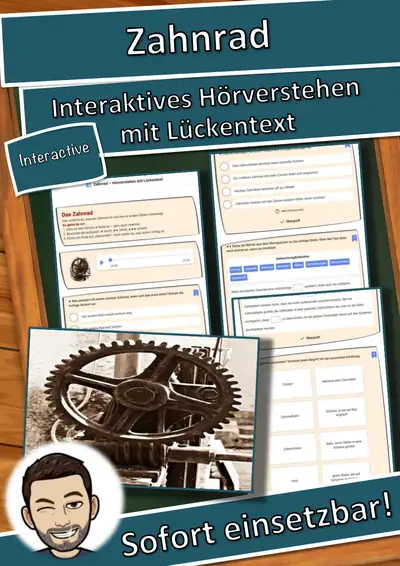
Zahnrad – Hörverstehen mit Lückentext (interaktiv)
Zahnpasta – Hörverstehen mit Lückentext (interaktiv)
Yoga – Hörverstehen mit Lückentext (interaktiv)
Xylophon – Hörverstehen mit Lückentext (interaktiv)

Woche – Hörverstehen mit Lückentext (interaktiv)

Wintersport – Hörverstehen mit Lückentext (interaktiv)

Winterschlaf – Hörverstehen mit Lückentext (interaktiv)

Winter – Hörverstehen mit Lückentext (interaktiv)
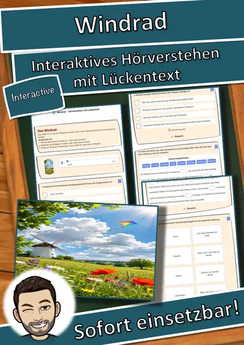
Windrad – Hörverstehen mit Lückentext (interaktiv)

Wind – Hörverstehen mit Lückentext (interaktiv)

Wimmelbild – Hörverstehen mit Lückentext (interaktiv)

Wildtiere – Hörverstehen mit Lückentext (interaktiv)
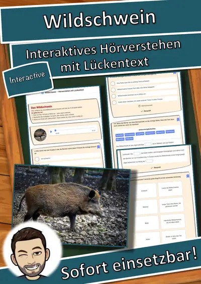
Wildschwein – Hörverstehen mit Lückentext (interaktiv)
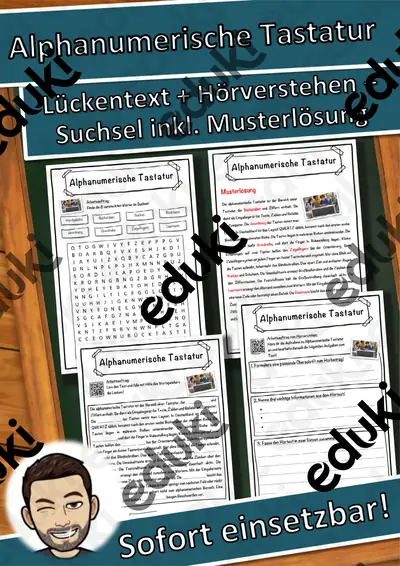
Alphanumerische Tastatur Lückentext mit Wortspeicher Hörverstehen und Suchsel
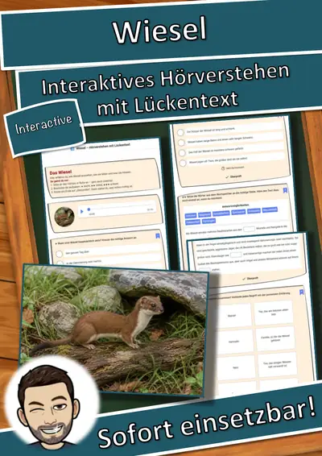
Wiesel – Hörverstehen mit Lückentext (interaktiv)
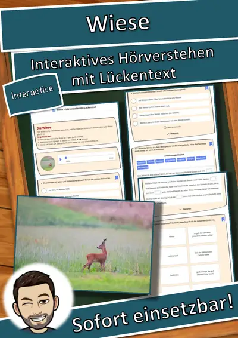
Wiese – Hörverstehen mit Lückentext (interaktiv)

Abendrot Lückentext mit Wortspeicher Hörverstehen und Suchsel

Wien – Hörverstehen mit Lückentext (interaktiv)

Westerstede – Hörverstehen mit Lückentext (interaktiv)
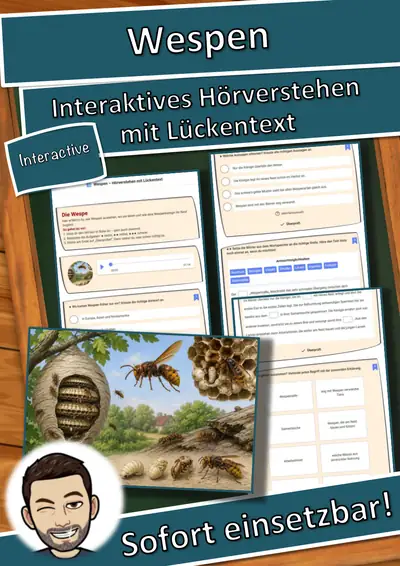
Wespen – Hörverstehen mit Lückentext (interaktiv)
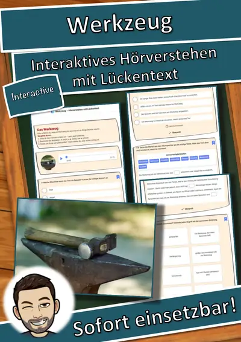
Werkzeug – Hörverstehen mit Lückentext (interaktiv)
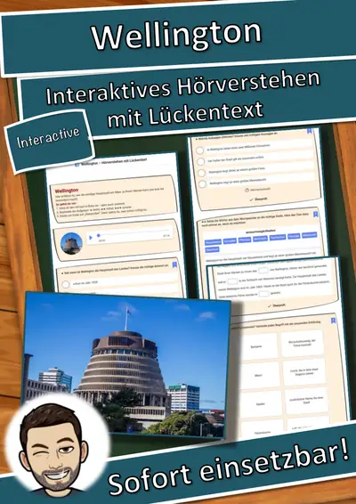
Wellington – Hörverstehen mit Lückentext (interaktiv)
Wellensittich – Hörverstehen mit Lückentext (interaktiv)
Weißtanne – Hörverstehen mit Lückentext (interaktiv)
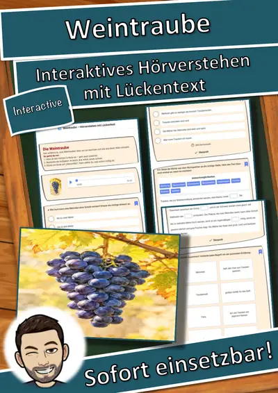
Weintraube – Hörverstehen mit Lückentext (interaktiv)
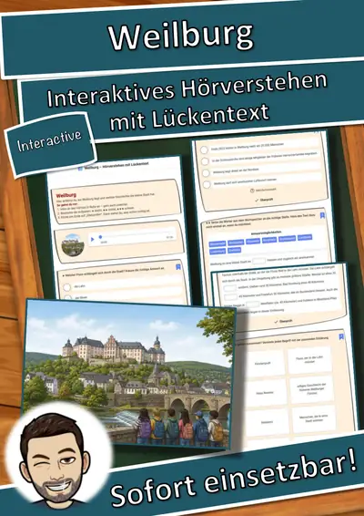
Weilburg – Hörverstehen mit Lückentext (interaktiv)

Wasser – Hörverstehen mit Lückentext (interaktiv)

Wartburg – Hörverstehen mit Lückentext (interaktiv)

Wasserturm – Hörverstehen mit Lückentext (interaktiv)
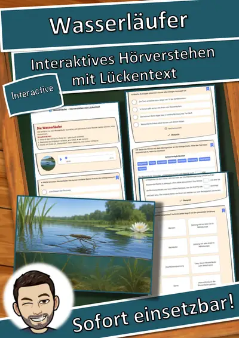
Wasserläufer – Hörverstehen mit Lückentext (interaktiv)
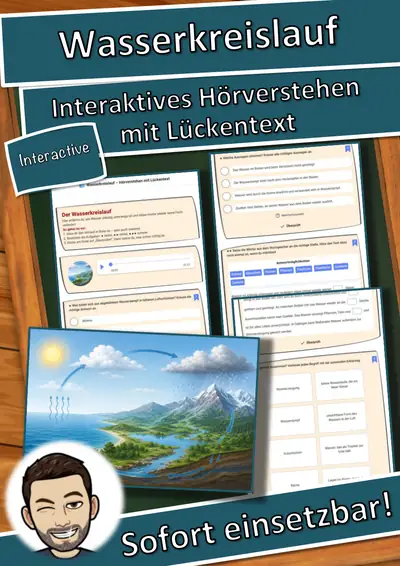
Wasserkreislauf – Hörverstehen mit Lückentext (interaktiv)
Wappen – Hörverstehen mit Lückentext (interaktiv)
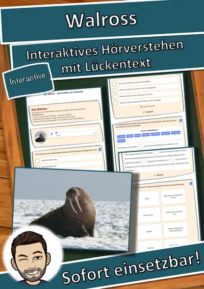
Walross – Hörverstehen mit Lückentext (interaktiv)
Walnussbaum – Hörverstehen mit Lückentext (interaktiv)
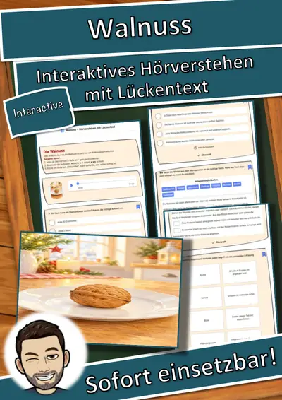
Walnuss – Hörverstehen mit Lückentext (interaktiv)

Waldtiere – Hörverstehen mit Lückentext (interaktiv)
Wald – Hörverstehen mit Lückentext (interaktiv)
Wahrzeichen – Hörverstehen mit Lückentext (interaktiv)
Wachs – Hörverstehen mit Lückentext (interaktiv)

Waage – Hörverstehen mit Lückentext (interaktiv)
Vögel – Hörverstehen mit Lückentext (interaktiv)
Violoncello – Hörverstehen mit Lückentext (interaktiv)
Vieh – Hörverstehen mit Lückentext (interaktiv)
Video – Hörverstehen mit Lückentext (interaktiv)
Verkehrszeichen – Hörverstehen mit Lückentext (interaktiv)
Velociraptor – Hörverstehen mit Lückentext (interaktiv)
Veilchen – Hörverstehen mit Lückentext (interaktiv)
Unfall – Hörverstehen mit Lückentext (interaktiv)
Unendlichkeit – Hörverstehen mit Lückentext (interaktiv)
Umwelt – Hörverstehen mit Lückentext (interaktiv)
Ulme – Hörverstehen mit Lückentext (interaktiv)

Ukraine – Hörverstehen mit Lückentext (interaktiv)
Uhu – Hörverstehen mit Lückentext (interaktiv)
Uhr – Hörverstehen mit Lückentext (interaktiv)
UNESCO – Hörverstehen mit Lückentext (interaktiv)
Töpferei – Hörverstehen mit Lückentext (interaktiv)

Turm – Hörverstehen mit Lückentext (interaktiv)
Tundra – Hörverstehen mit Lückentext (interaktiv)
Tulpen – Hörverstehen mit Lückentext (interaktiv)

Trompete – Hörverstehen mit Lückentext (interaktiv)
Triceratops – Hörverstehen mit Lückentext (interaktiv)
Traktor – Hörverstehen mit Lückentext (interaktiv)
Tower Bridge – Hörverstehen mit Lückentext (interaktiv)
Tourismus – Hörverstehen mit Lückentext (interaktiv)
Torte – Hörverstehen mit Lückentext (interaktiv)
Tomate – Hörverstehen mit Lückentext (interaktiv)
Tiger – Hörverstehen mit Lückentext (interaktiv)
Tierpark – Hörverstehen mit Lückentext (interaktiv)
Tiere – Hörverstehen mit Lückentext (interaktiv)

Takt Lückentext mit Wortspeicher Hörverstehen und Suchsel
Tierarzt – Hörverstehen mit Lückentext (interaktiv)
Thulium – Hörverstehen mit Lückentext (interaktiv)
Thron – Hörverstehen mit Lückentext (interaktiv)
Thermometer – Hörverstehen mit Lückentext (interaktiv)
Theater – Hörverstehen mit Lückentext (interaktiv)
Tempel – Hörverstehen mit Lückentext (interaktiv)
Teleskop – Hörverstehen mit Lückentext (interaktiv)
Straße – Hörverstehen mit Lückentext (interaktiv)
Telefon – Hörverstehen mit Lückentext (interaktiv)
Teich – Hörverstehen mit Lückentext (interaktiv)
Teddybär – Hörverstehen mit Lückentext (interaktiv)
Technik – Hörverstehen mit Lückentext (interaktiv)

Tauben – Hörverstehen mit Lückentext (interaktiv)
Tarnung – Hörverstehen mit Lückentext (interaktiv)
Tamburin – Hörverstehen mit Lückentext (interaktiv)

Tal – Hörverstehen mit Lückentext (interaktiv)

Taiga – Hörverstehen mit Lückentext (interaktiv)

Tag und Nacht – Hörverstehen mit Lückentext (interaktiv)

Tafel – Hörverstehen mit Lückentext (interaktiv)

Synthesizer – Hörverstehen mit Lückentext (interaktiv)

Sumpf – Hörverstehen mit Lückentext (interaktiv)

Störche – Hörverstehen mit Lückentext (interaktiv)

Stockholm – Hörverstehen mit Lückentext (interaktiv)

Stift – Hörverstehen mit Lückentext (interaktiv)

Stichling – Hörverstehen mit Lückentext (interaktiv)

Spree – Hörverstehen mit Lückentext (interaktiv)

Spielzeug – Hörverstehen mit Lückentext (interaktiv)

Spielplatz – Hörverstehen mit Lückentext (interaktiv)

Spiel – Hörverstehen mit Lückentext (interaktiv)

Spaghetti – Hörverstehen mit Lückentext (interaktiv)

Souvenir – Hörverstehen mit Lückentext (interaktiv)

Sonthofen – Hörverstehen mit Lückentext (interaktiv)

Smartphone – Hörverstehen mit Lückentext (interaktiv)

Skyline – Hörverstehen mit Lückentext (interaktiv)

Skelett – Hörverstehen mit Lückentext (interaktiv)

Silvester – Hörverstehen mit Lückentext (interaktiv)

Sigmaringen – Hörverstehen mit Lückentext (interaktiv)
Keine Materialien gefunden – versuch einen anderen Suchbegriff oder Filter.
Aufbau eines Lückentextes mit Wortspeicher
Im Zentrum steht ein kindgerechter Sachtext, aus dem die Fachbegriffe entfernt wurden. Der Wortspeicher listet die fehlenden Wörter auf, sodass es um Verstehen geht und nicht um Raten. Ein Suchsel greift dieselben Begriffe noch einmal auf und festigt die Schreibweise.
Über einen QR-Code lässt sich der Text zusätzlich anhören. Das hilft schwächeren Leserinnen und Lesern und schafft nebenbei eine Übung im Hörverstehen.
Einsatz im Unterricht
Die Blätter sind für Stationenarbeit, Wochenplan und Vertretungsstunden gedacht. Weil jedes Blatt eine Lösung mitbringt, lässt es sich auch ohne Einführung austeilen.
In Klassen mit unterschiedlichem Sprachstand hat sich bewährt, zuerst die Hörfassung anzubieten und den Lückentext danach ausfüllen zu lassen.
Häufige Fragen
Ist der Wortspeicher immer dabei?
Ja. Alle fehlenden Wörter stehen im Wortspeicher, damit der Schwerpunkt auf dem Textverständnis liegt.
Gibt es zu jedem Blatt eine Lösung?
Ja, jedes Material enthält eine Musterlösung.
Wie funktioniert das Hörverstehen?
Der QR-Code auf dem Blatt führt direkt zur Audiofassung des Sachtextes. Eine zusätzliche App wird nicht benötigt.